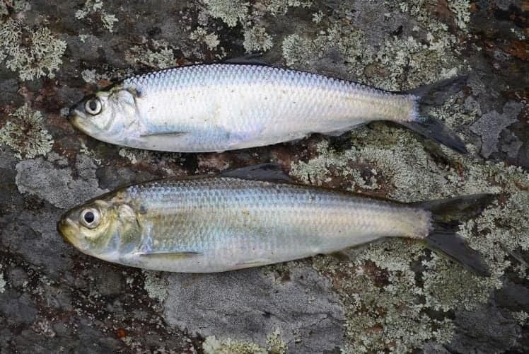
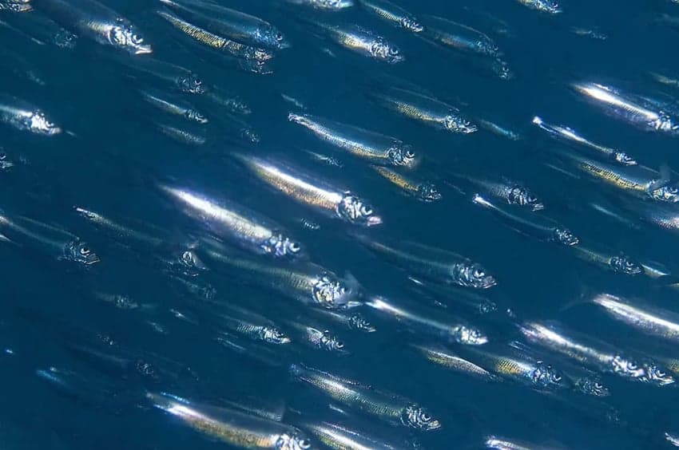
그건 바로 청어 <<< 이 미친 새끼들...
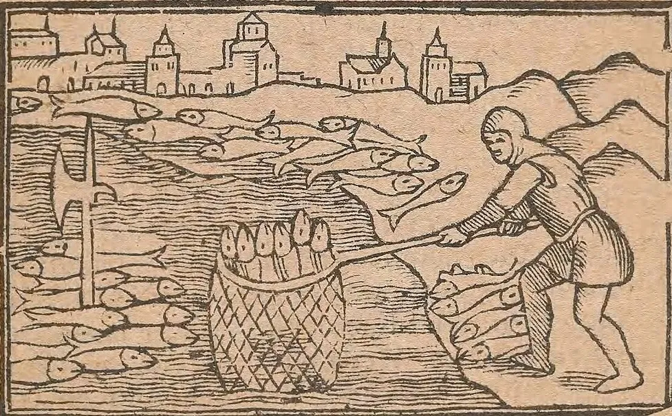
일단 ㅈㄴ 양이 많아서 그물만 던지면 잡아올리는 수준
그리스도교가 유럽에서 승리하면서 교리에 따라 육고기 금식일이 많아져 생선 수요가 급증했고, 가장 값싼 생선인 청어도 인기가 엄청 많아졌음...
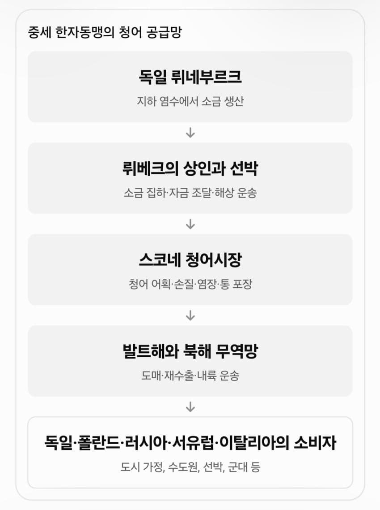
북부 독일 한자동맹(Hanseatic League)은 청어 장사를 독점하며 부를 쌓아 상업을 진흥 시켰고, 유럽 상업 네트워크도 청어 무역 덕분에 촘촘하게 발달됐음...
많이 잡았으니 염장법도 덩달아 발달했고
바다 위에서 가공까지 끝내는 대형 어선도 등장했으며
통의 규격, 소금 종류, 품질 검사를 법으로 정해 국가 품질 인증 제도까지 나타났음...
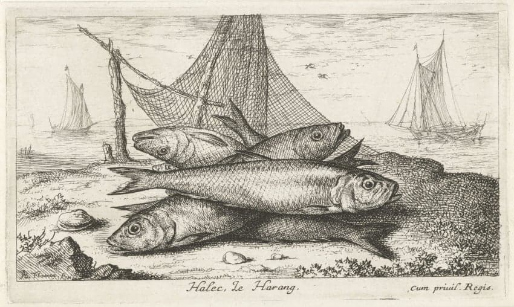
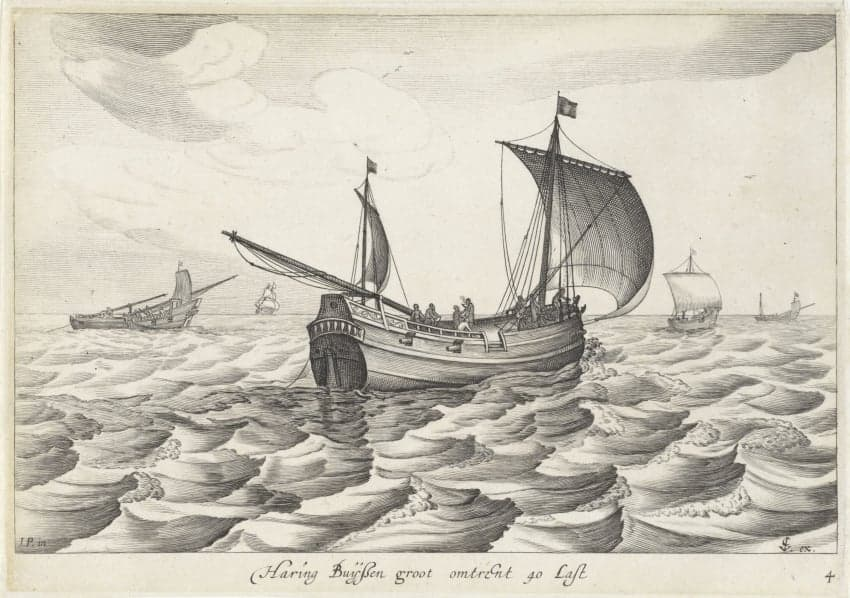
15세기에는 청어떼가 네덜란드 앞바다로 몰려들었고
덕분에 암스테르담은 청어뼈 위에 세워졌다는 농담이 돌 정도로 어업이 활발하게 이뤄지며 엄청난 부를 쌓게됨 ㄷㄷ
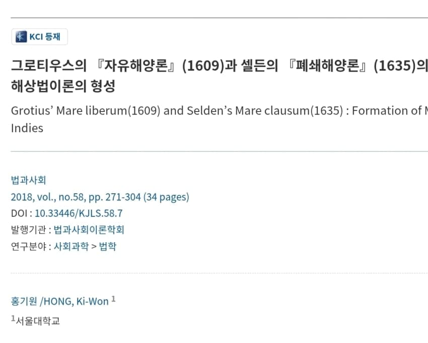
청어잡이 때문에 어선들끼리 분쟁이 발생하자 영국은 자국 영해의 소유권을 주장했고, 그로티우스의 <자유해론> (1609)과 이에 맞선 셀던의 <폐쇄해론> (1635)이 맞부딪히며 첨예한 논쟁을 낳게됨.
이 논쟁은 오늘날 공해, 영해 개념의 출발점으로 인정 받고 있음...
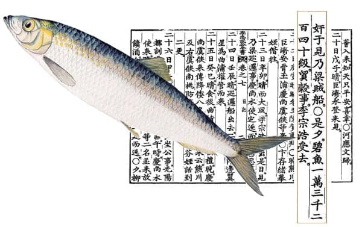
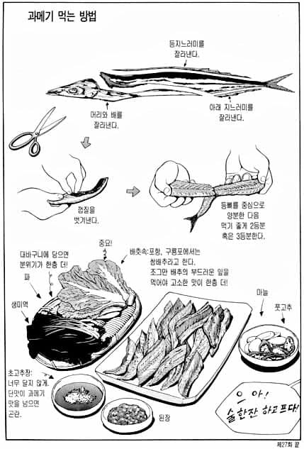
이순신 장군도 군량 문제 해결을 위해 청어를 잡았다는 기록이 남아있고
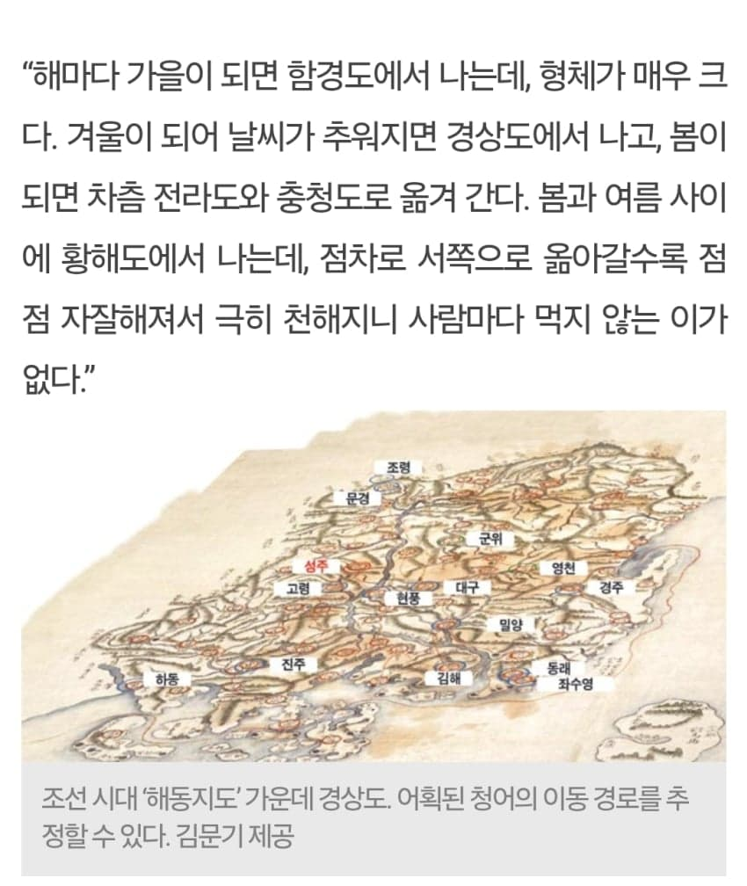
조선시대 때도 청어는 발에 채이는 수준으로 잡았기 때문에 서민들의 든든한 단백질 공급원으로 많은 사랑을 받았음
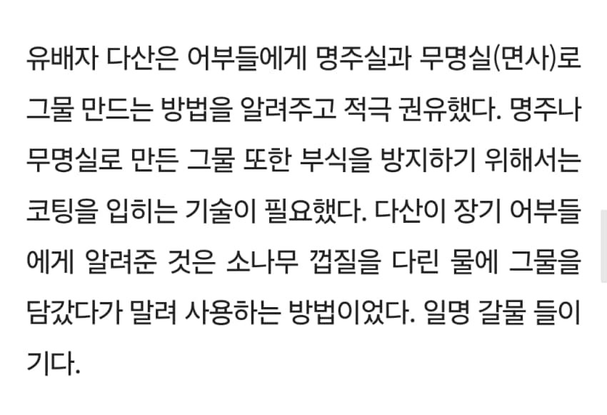
다산 정약용은 유배 와중에도 청어 잡이 어민들에게 최신 그물망 짜는 법을 알려줬고, 이 방법은 20세기까지 애용되었다고 전해짐...
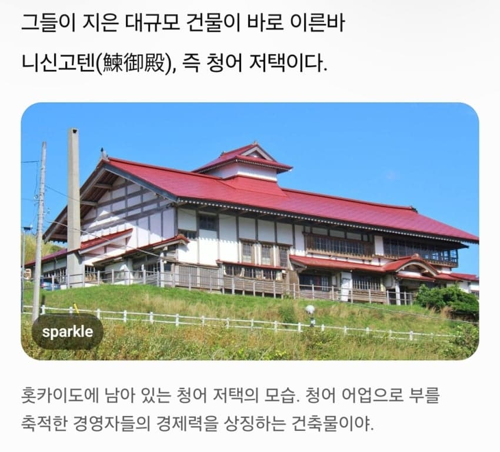
일본에서도 막대한 청어를 잡아들인다음 쪄낸 다음 기름으로 가공해 유통했고
남은 청어 찌꺼기들은 질 좋은 비료로 농민들에게 팔리며, 19세기 중반에는 100만톤에 달하는 어획량이 기록되기도 했음
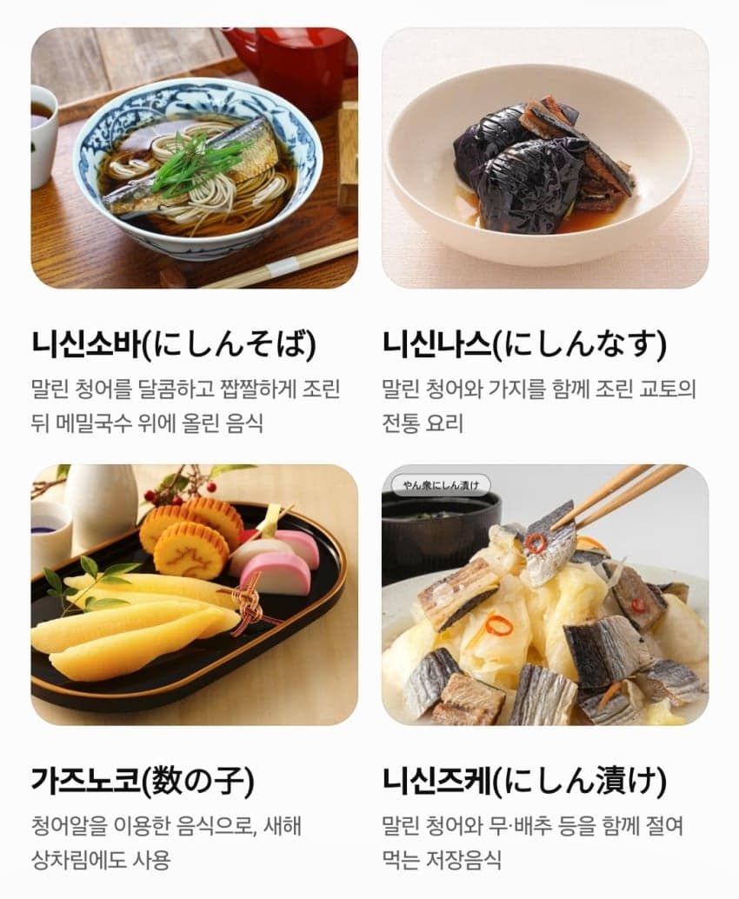
청어 (Japan)
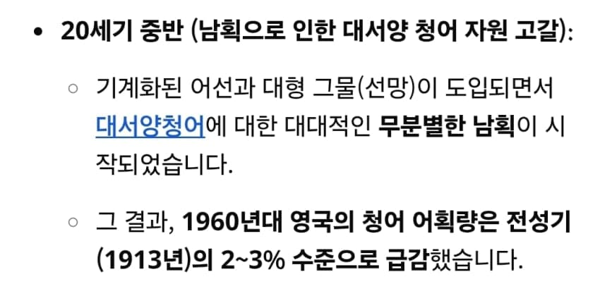
하지만 전세계적으로, 특히 서구권에서 대서양 청어를 너무 잡아버리는 바람에 청어 어획량은 폭락해버렸고...
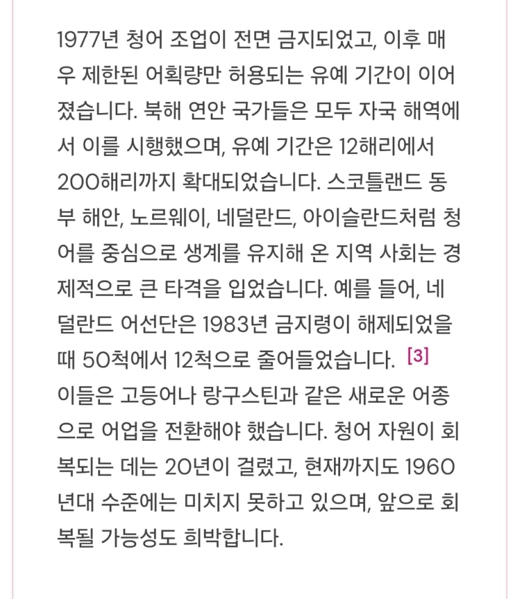
1977년 국제 조약을 통해 대서양 청어 조업이 전면 금지되면서
천년 가까이 인류를 먹여살리며 경제를 좌지우지했던 청어의 전성 시대는 끝나버렸음....
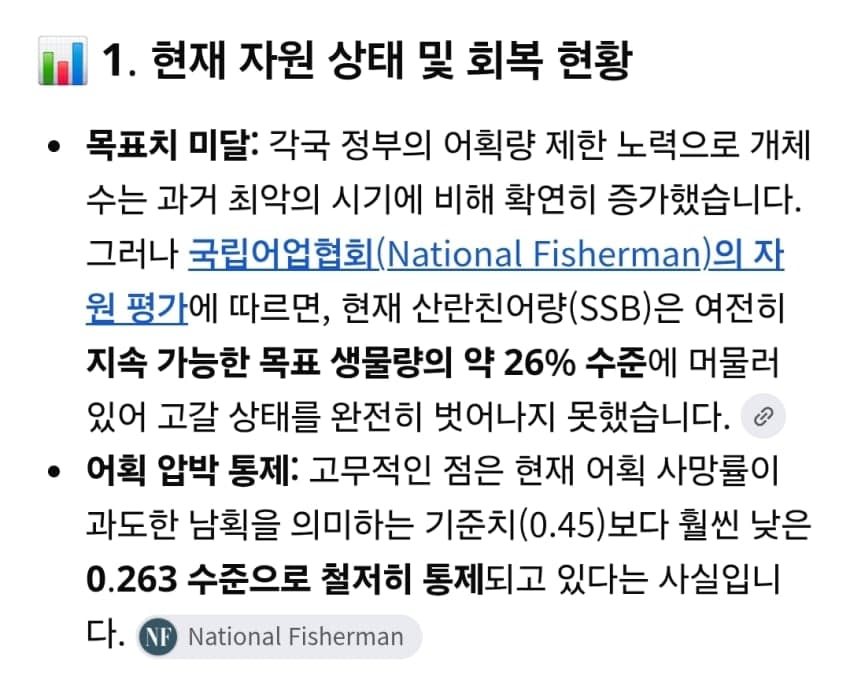
오늘날까지 대서양 청어 조업은 통제 받고 있지만
전성기에 비하면 아직도 개체수는 한참 모자라 회복까지는 매우 더딜것으로 예상 중임...
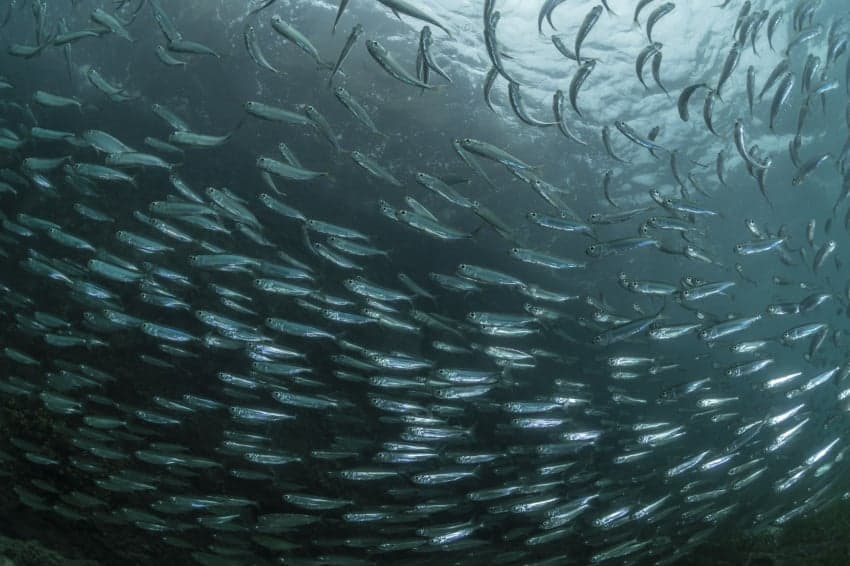
청어 <<< 미안하면 개추...
청어는 먹어본적 없는듯